UV展开步骤
1.打开VR的MAX文件，另存为3DS的MAX文件，所有的元素按大小分离（烘焙贴图大小最大不超过512x512像素，通用为256X256）
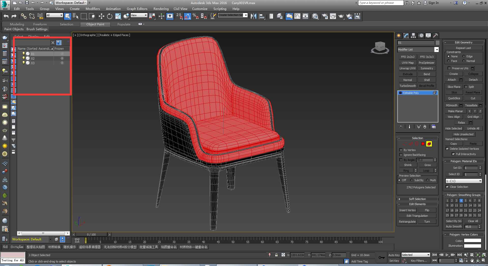2、按分离好的对象，分别在UV通道3中展开UV，删除掉隐藏的面。
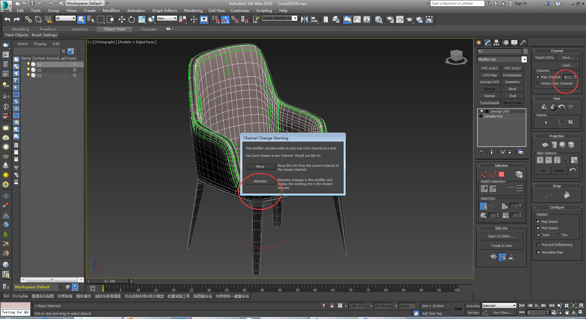 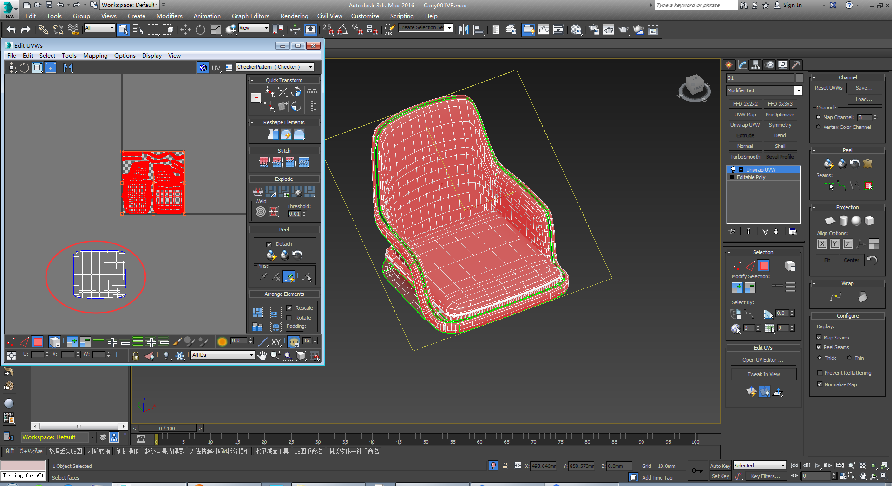 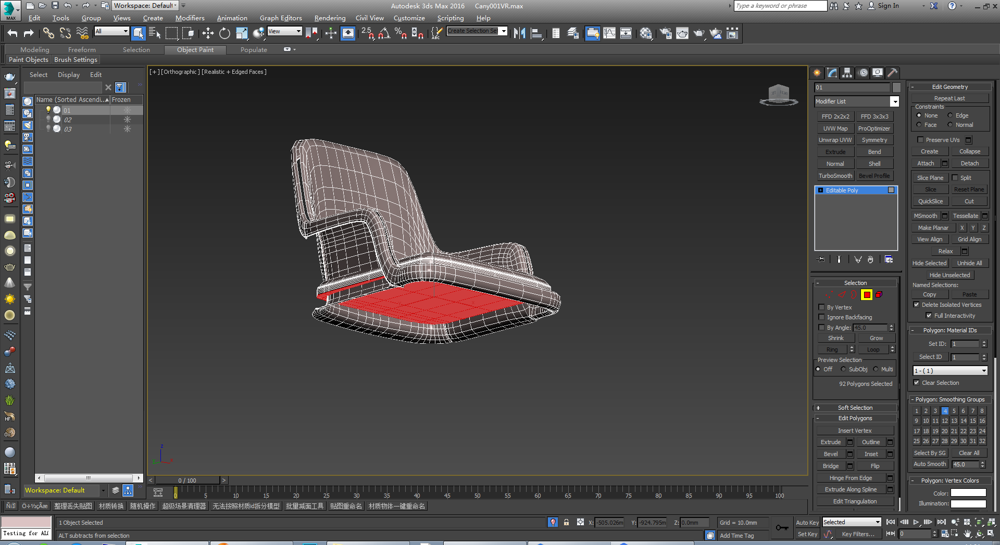 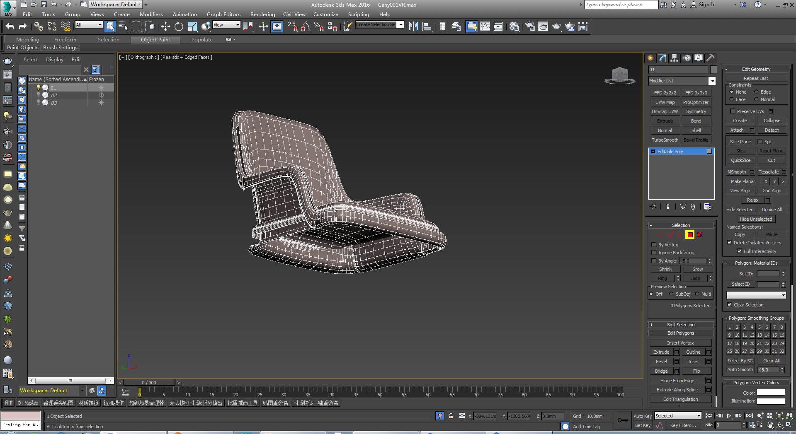 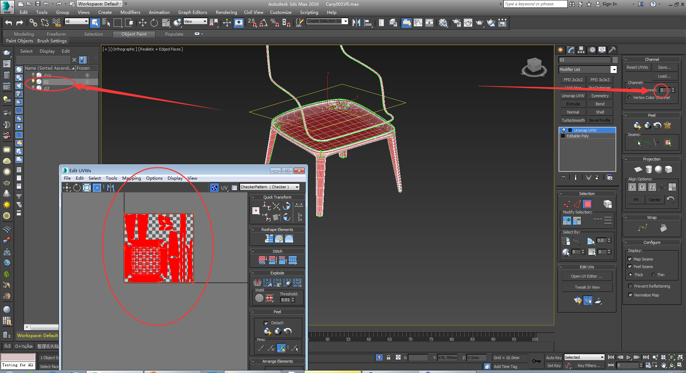 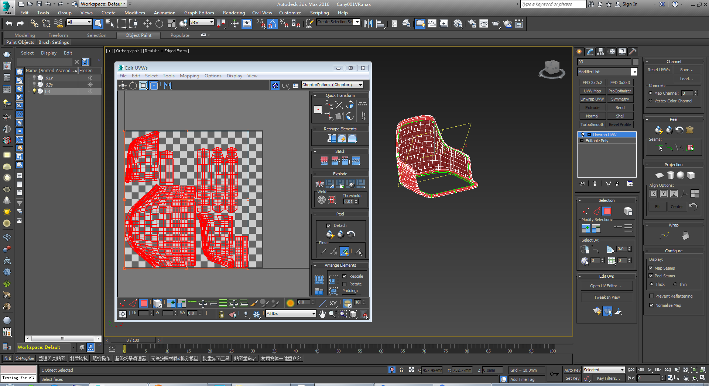3、保存3DS的MAX文件，另存为灯光MAX文件
4、导入模板灯光和渲染设置
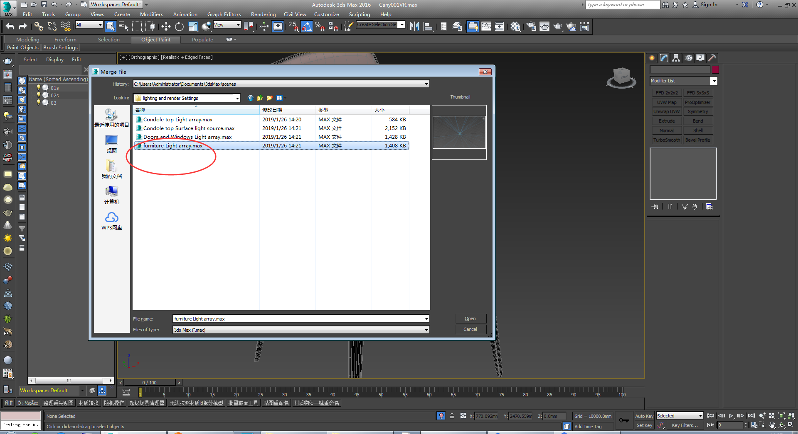 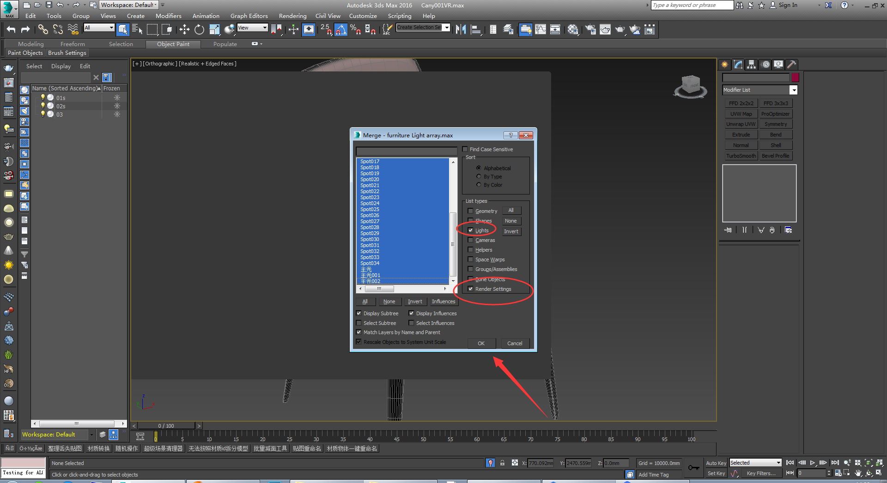 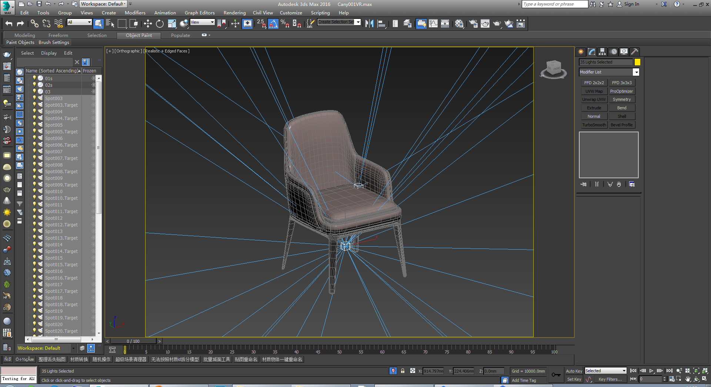5、复制VR文件夹中的贴图到3DS文件夹
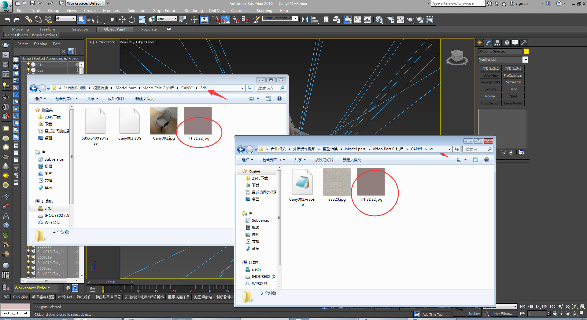6、调整烘焙参数及烘焙贴图的名称/存储位置/格式等信息后烘焙贴图
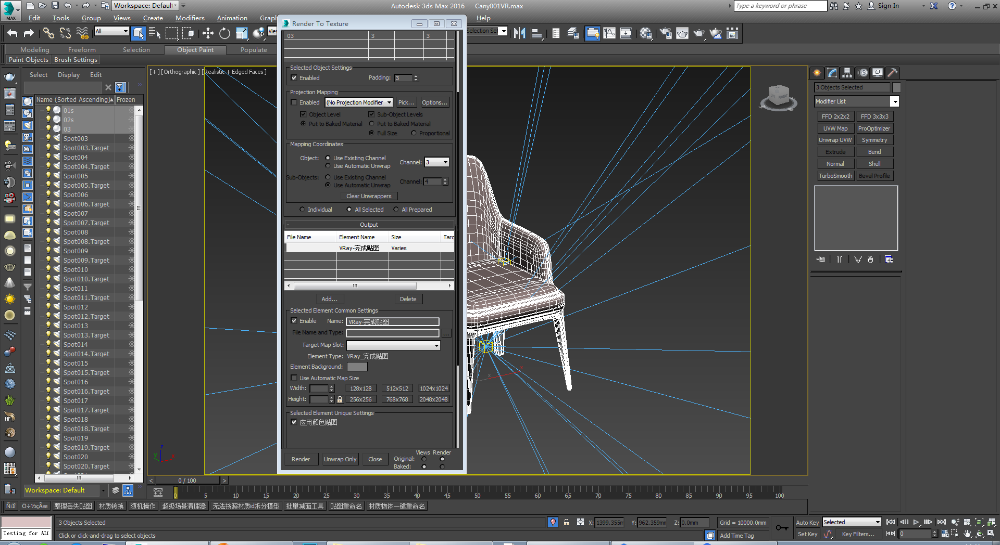7、保存灯光max文件，打开3DSmax文件，将烘焙完的贴图赋予模型，将UV通道3中的UV移动到通道1，
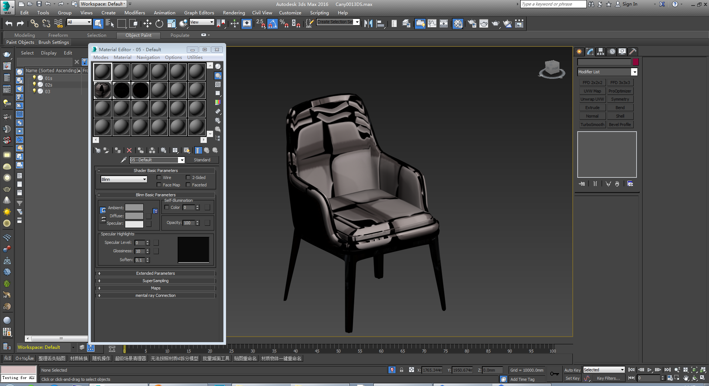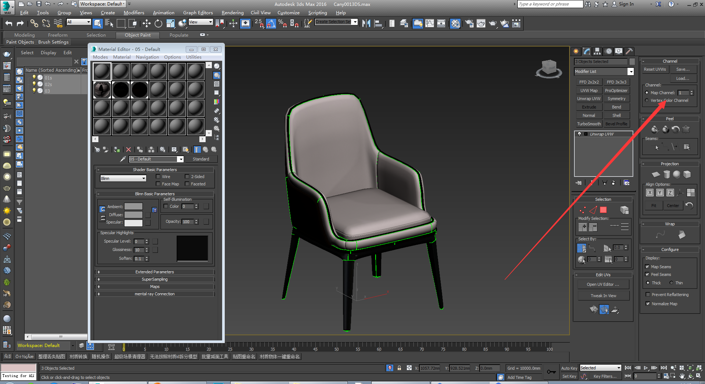